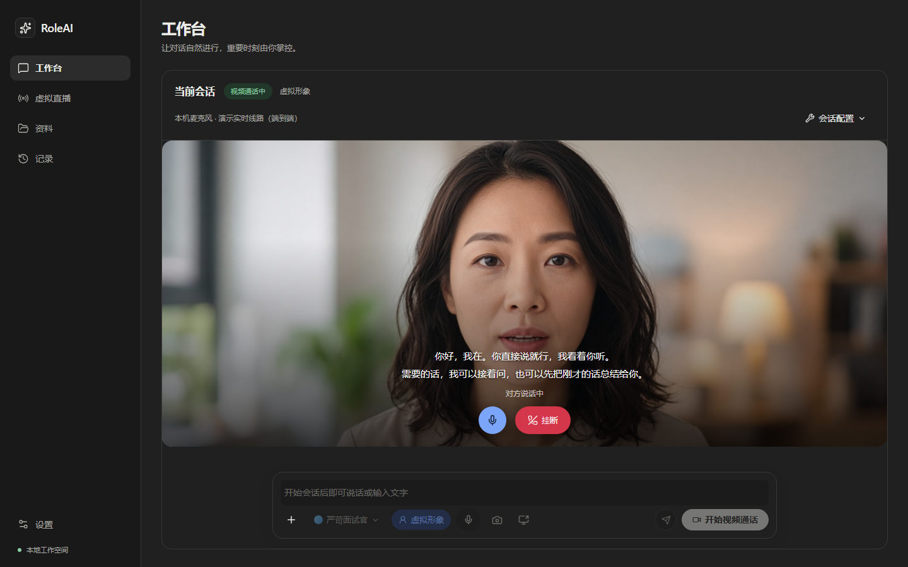
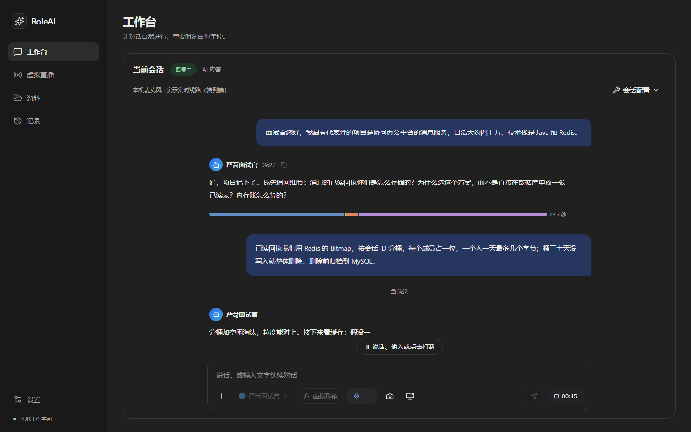
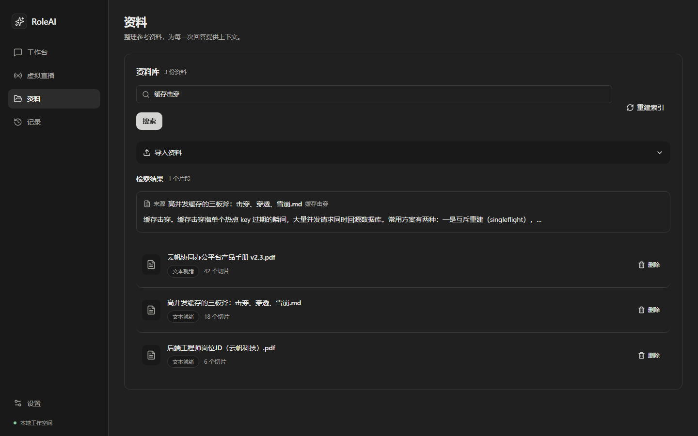
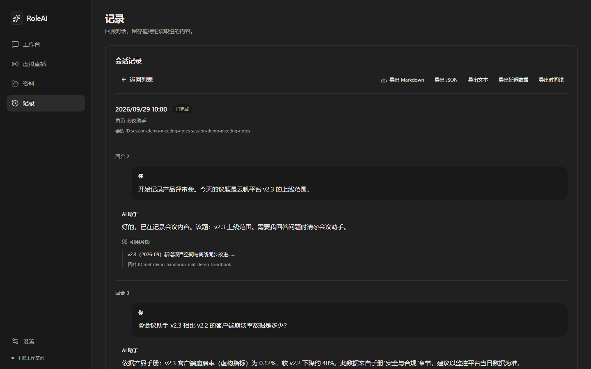
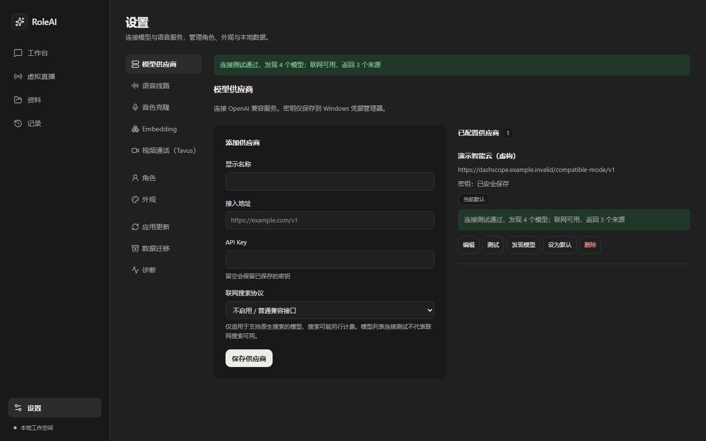
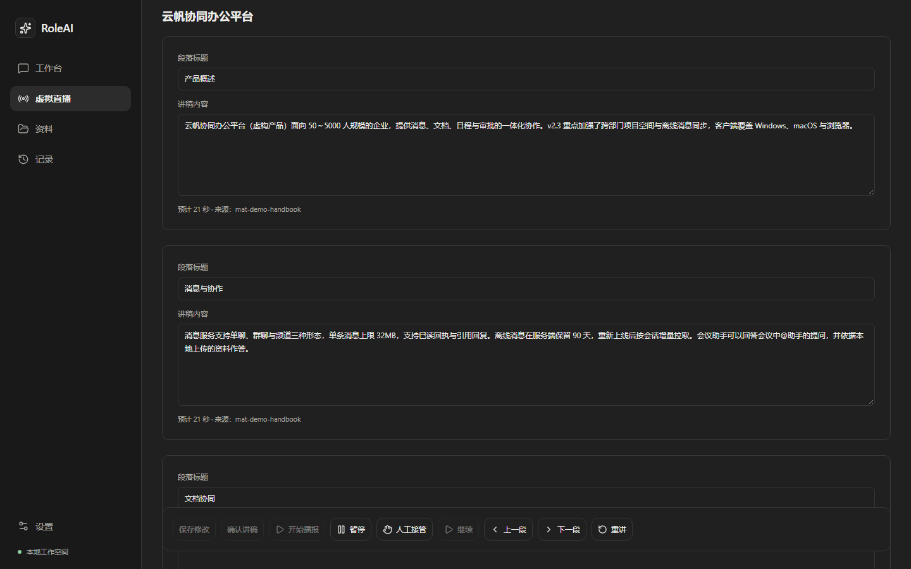
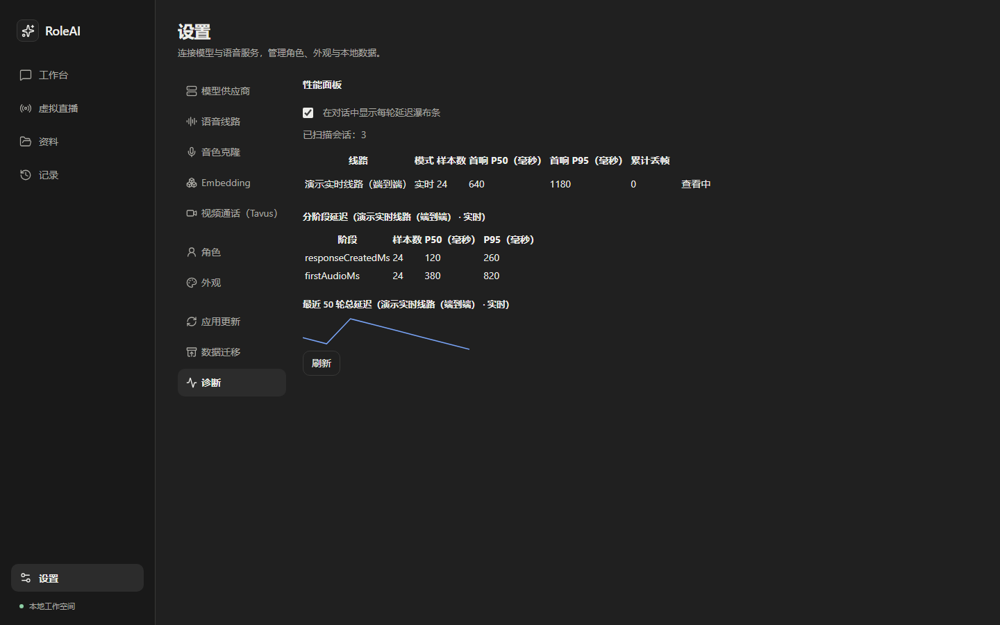

RoleAI
A real-time interactive digital human.
The role appears on camera. You talk, and they look at you while answering. Use it for interviews, meetings, and presentations. The Windows app places the live call; in the online demo the digital human speaks on stage.

This is an internal trial build for Windows x64. Before use, disclose that an AI is participating and how it is recorded, and keep a human in the review loop; do not use it for covert impersonation or unreviewed automated decisions. In the online demo the digital human speaks on stage and the captions follow; the live call runs in the Windows app.
Three core capabilities
A complete loop around real-time conversation — from talking to reviewing.
-
Real-time voice
Speech appears as live subtitles and the AI reply streams in; barge in at any moment, with pause, takeover and correction controls.
-
Roles and materials
Eight roles ship out of the box — strict interviewer, speaking coach, meeting assistant, live-stream presenter, debate partner and more; answers can cite imported materials.
-
Local-first
Role configs, materials and session records stay on your machine; keys live in Windows Credential Manager; records export to Markdown.
A quick tour
All screenshots are generated automatically by Playwright and stay in sync with the UI.





